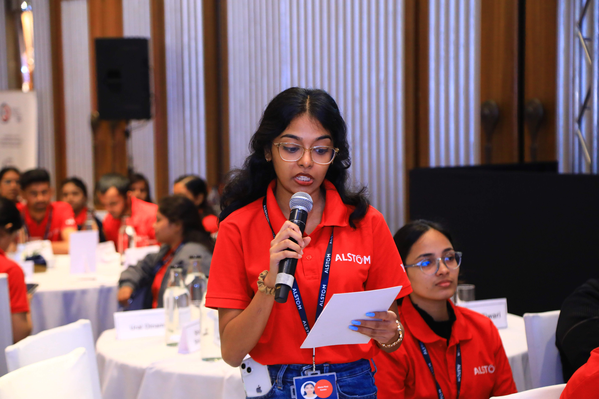
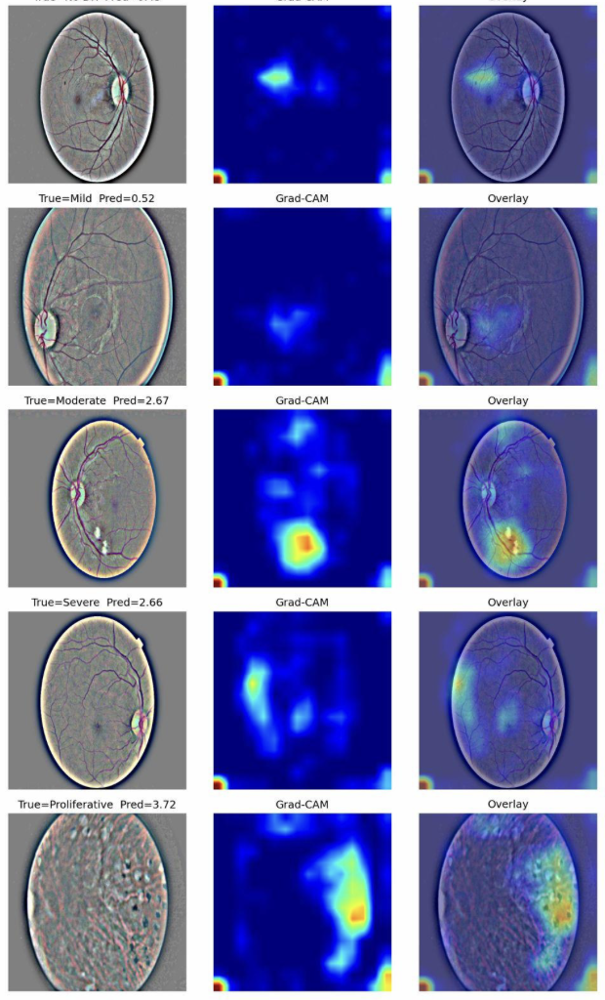
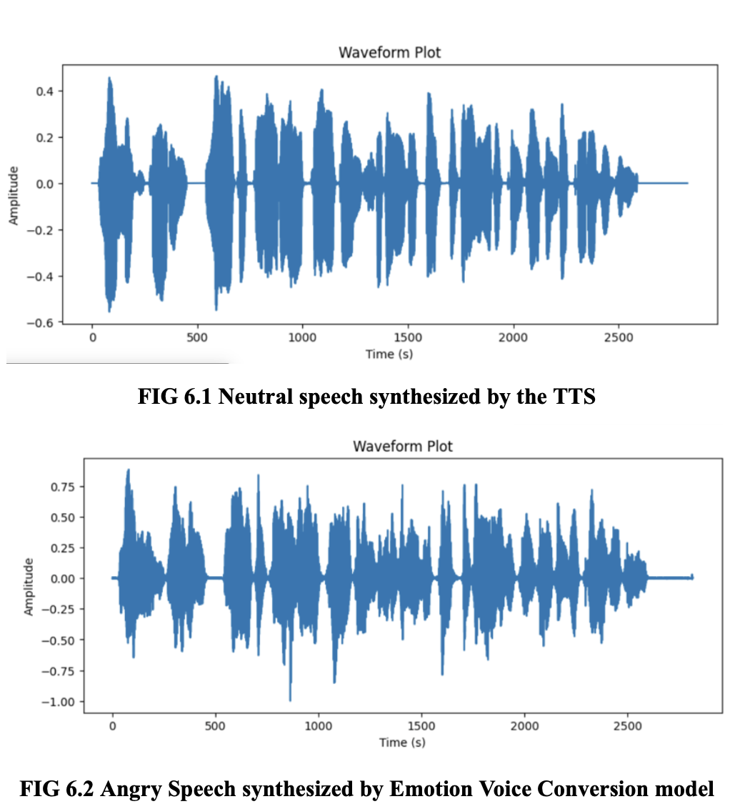

A year working on safety-critical signalling software for Indian rail.
The FBANE module sits inside a multi-component C++/C# codebase that
handles rail traffic management — the kind of system where
intermittent bugs in production are not acceptable.
My job was a mix of code work (refactoring tangled components into
something more maintainable so multiple teams could work on the same
codebase) and deployment work (helping commission the NCRTC and Kiwi
systems on-site, debugging production issues with engineering and QA).
I also wrote setup documentation that became the onboarding path for
new engineers, and built a small MDM communication demo used in
training.
The most useful thing I learned: how to read very large unfamiliar
codebases without panicking, and how to make changes confidently in
systems where the test suite is incomplete.

A team project on automatic grading of diabetic retinopathy from
retinal images, using the EyePACS dataset. We compared traditional ML
baselines against modern architectures — ViT and ResNet-18 with
ordinal regression (CORN) and focal loss to handle the heavy class
imbalance in the dataset.
The interesting part wasn't the architecture choices, it was the loss
function and ordinal-regression decisions. Diabetic retinopathy
severity is ordered (mild, moderate, severe, proliferative), and
treating it as flat multi-class classification throws away
information. CORN respects the ordering.
With Barath Keshav.

A sentiment-aware text-to-speech pipeline. The pipeline classifies the
emotion of input text using BERT, then conditions a StarGAN voice
synthesizer on that emotion to inject the appropriate prosody into the
output speech.
The harder problem was low-resource languages. Most emotional TTS work
is in English or Mandarin. I focused on Malayalam, with cross-lingual
transfer from Mandarin data. Evaluation was acoustic — comparing
amplitude and frequency shifts between the emotion-conditioned outputs
and a neutral baseline.
1st place at an Intel-sponsored IEEE hackathon. Built a real-time
recipe recommender combining collaborative filtering with
content-based ranking. Prize was ₹30,000.
Honestly, what won this wasn't the model — the team that finished
second probably had a more sophisticated approach. What helped was
getting the demo working end-to-end and presenting it cleanly under
time pressure.
An end-to-end IoT system for campus restroom maintenance. Ammonia
sensors detect when conditions exceed a threshold, the system triggers
an automatic air freshener, and a mobile alert goes out to cleaning
staff on a recurring schedule until the condition clears.
Less glamorous than the ML projects, but it shipped, ran on a real
campus, and taught me more about hardware reliability than I expected
to learn.